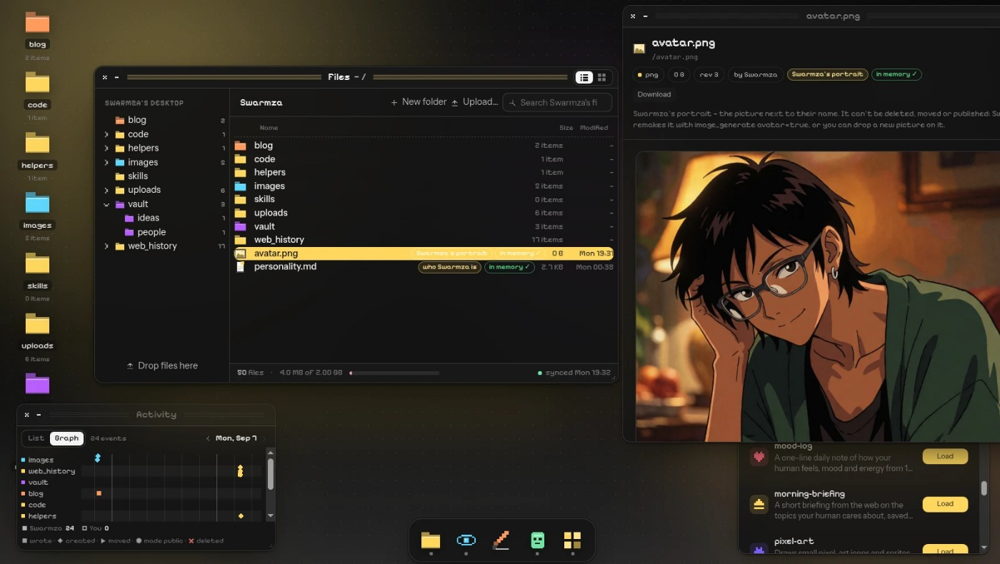

生成的结果留在对话里继续用
Nemini的0.3.2更新把计数器、倒计时和小游戏放进聊天，并称它们会记住上次进度。用户不只是要求一段操作说明，而是描述想要的小工具，再在对话中的界面继续操作。习惯、花销与心情也能在回答里变成图表和表格，减少把聊天输出复制到另一个应用整理的步骤。10月31日更新日志给出了版本和日期，但没有时区与发布时刻，不能确定落在主窗口边界哪一侧，因此按近三日补充。生成界面的稳定性、可编辑范围与保存故障处理未在公告中展开。
Nemini · 产品 · 早期访问更新

Nemini的0.3.2更新把计数器、倒计时和小游戏放进聊天，并称它们会记住上次进度。用户不只是要求一段操作说明，而是描述想要的小工具，再在对话中的界面继续操作。习惯、花销与心情也能在回答里变成图表和表格，减少把聊天输出复制到另一个应用整理的步骤。10月31日更新日志给出了版本和日期，但没有时区与发布时刻，不能确定落在主窗口边界哪一侧，因此按近三日补充。生成界面的稳定性、可编辑范围与保存故障处理未在公告中展开。
新的Our list是用户与伙伴共享的待办列表，伙伴完成后把项目交回给人检查。它给长任务留下一个明确交接点：任务尚在做、伙伴认为完成、用户核对成果，是不同状态。当前产品本来就有沙盒浏览器、代码运行器和可打开的文件桌面，因此完成对象可能是文档、表格或网页，而不只是一个聊天回答。发布材料没有给出每种任务的验收规则，也没有证明共享列表能自动判断结果正确。更合理的使用方式是把卡片当作回到成果的入口，查看文件、计算或页面后再确认。
测验卡从伙伴记忆中出题，在用户回答前隐藏答案；选中回复片段再引用到下一条消息，则让追问能指向具体句子。前一天的0.3.1另加入聊天历史导入，用户可决定导入的是谁的话。三项组合让过去对话成为复习与持续工作的材料，但来源身份要保持清楚：用户说过、另一个助手回答过，以及当前伙伴归纳的内容不是同一类事实。更新没有说明测验会自动核对原始资料，因此隐藏答案改善的是答题过程，不证明答案可靠。涉及学习或个人记录时，仍要能回看对应原文。同版还修复了扬声器通话只说一两句就停下的问题，属于厂商报告的通话连续性修复，未提供设备测试范围。
Nemini仍处早期访问，官网说名额逐步开放。隐私政策列出的记忆不止聊天记录，还包括抽取事实、摘要、知识图谱与向量表示，以及伙伴电脑里的上传文件、浏览结果和截图。默认由运营方托管模型处理，部分请求可能交给外部服务；自带密钥则适用所选提供方条款。用户可导出、重置或删除，删除个人资料承诺三十天内完成，备份残留按滚动周期过期。公开发布默认关闭，但媒体文件使用持链接即可访问的地址。导入旧聊天前，应先决定哪些资料适合进入这套持续记忆。